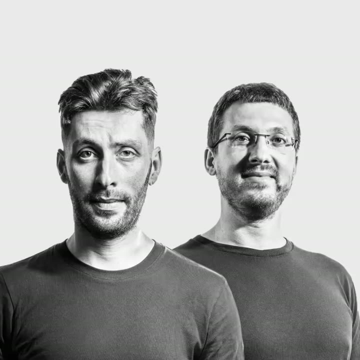
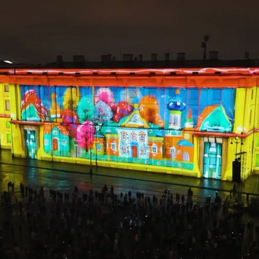
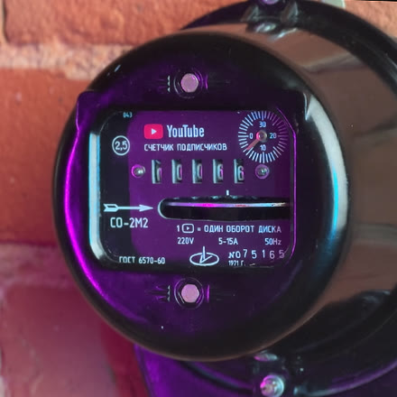
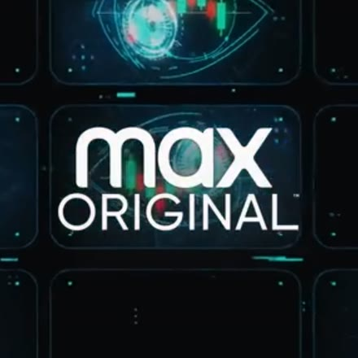
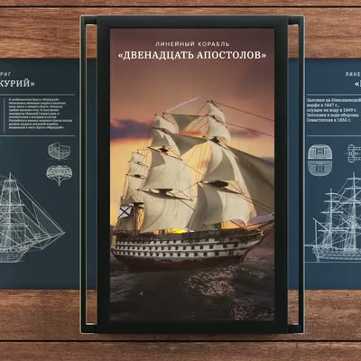
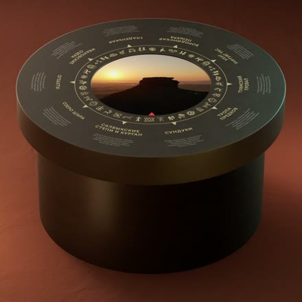

Достопримечательности Хакасии
Интерактивный стол · Смотреть проект →
Посетитель поворачивает столешницу и совмещает метку места с указателем — на экране появляются карта и ролик о достопримечательности.
Что мы делаем
Для музеев и выставок. Берем на себя контент, программирование, инженерные решения и настройку на площадке. Работаем с музеями, застройщиками и генеральными подрядчиками.
Интерактивный стол · Смотреть проект →
Посетитель поворачивает столешницу и совмещает метку места с указателем — на экране появляются карта и ролик о достопримечательности.
Игра на сенсорном экране
Игра на сенсорном экране: собрать изображение древнего изваяния. Головоломка решена — на макете менгира загорается подсветка.
Корабельный симулятор
Посетитель ведет парусник к выбранному месту, вращая настоящий штурвал, а ветер и волны сбивают его с курса. В конце — рассказ о месте и оценка точности.
Подвижный экран над чертежами
Экран на направляющих. Посетитель двигает его к чертежу — и на нем оживает 3D-модель корабля и видны его данные.
Третье место на конкурсе современного медиаискусства «Страна Света-2025» при поддержке ПФКИ · Смотреть мэппинг →
Мэппинг на фасаде в Санкт-Петербурге перед тысячами зрителей. Рассказали легенды села Устье под Вологдой.
Артем отвечает за концепцию и дизайн, Арсений — за код и датчики. Дизайн и инженерию ведем параллельно: нарисовать экспонат, а потом встроить картинку в железо без изменений почти невозможно

Можем сами придумать концепцию экспоната или экспозиции. Если у музея уже есть архитектурная концепция, развиваем ее.
Сценарий, интерфейсы, 3D-графика и анимация. Берем информацию об экспозиции и экспонате и перерабатываем ее под каждый экран.
Датчики, механика, контроллеры и разработка программ. Например, на тачскринах отключаем системные жесты, чтобы посетитель не вышел из экспоната.
Настраиваем на площадках по всей России. Для долгих экспозиций делаем панель управления и обучаем сотрудников.

Призовое место за мэппинг на Дворцовой площади в Санкт-Петербурге.

Счетчик подписчиков YouTube из советского электросчетчика вошел в шорт-лист.

Вступительная графика к документальному сериалу «Игры Уолл-стрит».

Все интерактивные экспонаты зала Черноморского флота: концепция, дизайн и программирование.

Три интерактивных экспоната для стенда Республики Хакасия.
Например, тест или карта объектов
На один или несколько экранов
С физическими датчиками или управлением светом, как стол о Хакасии
Снимаем разборы мультимедиа-проектов — своих и чужих: как устроены, на чем работают и что из этого стоит повторить
Смотреть на YouTube ↗Есть проект экспозиции или задача по отдельному экспонату?
Пришлите материалы и сроки — обсудим. Даем скидку за срочность
Москва, ул. Бауманская, 6, стр. 2